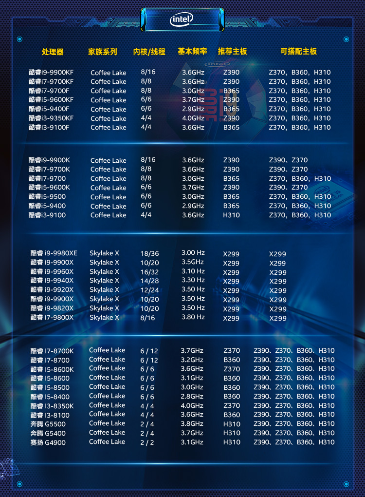
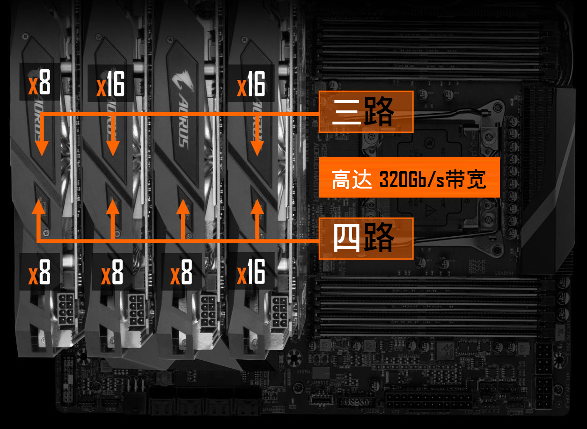
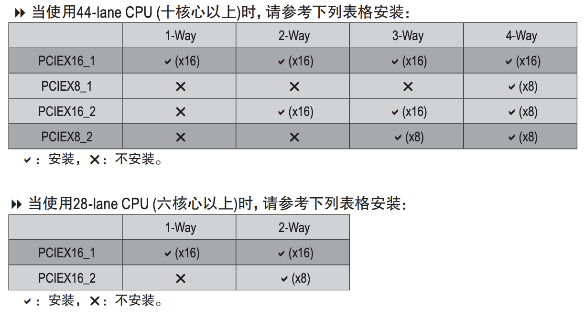
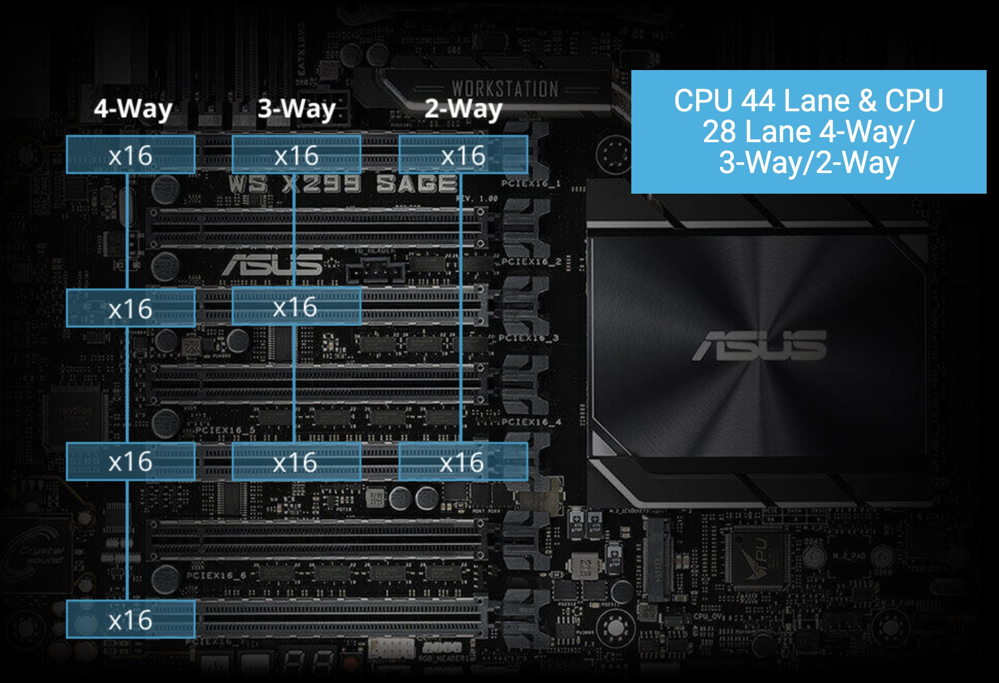
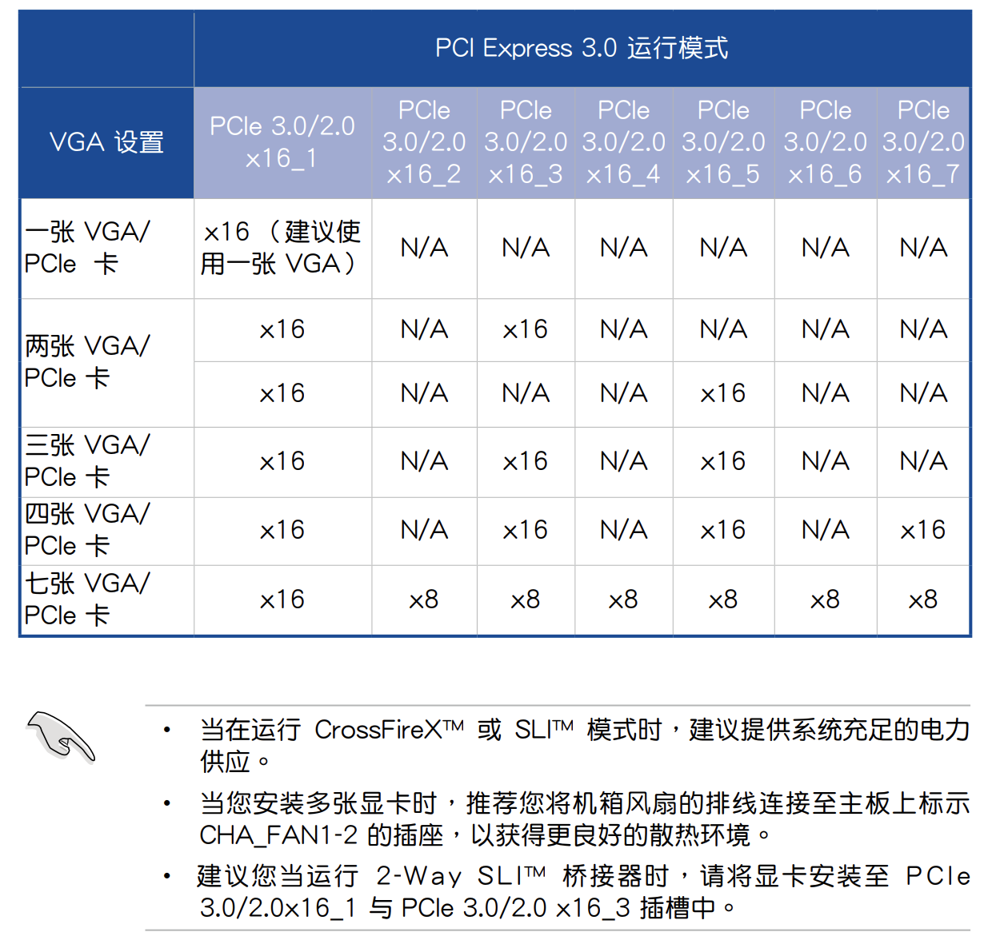
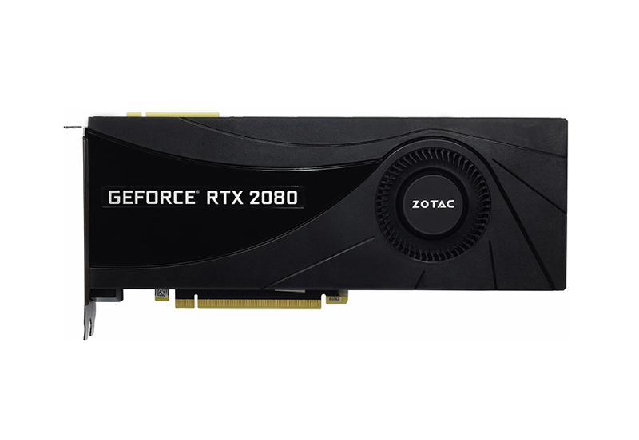
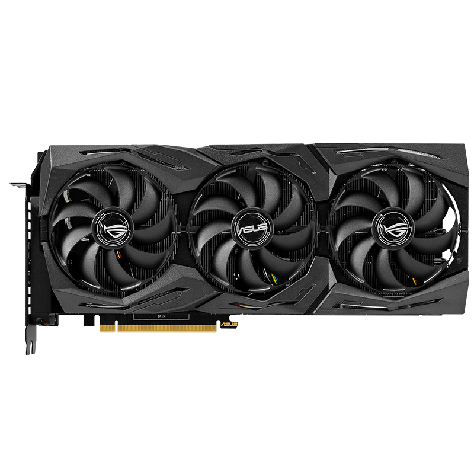
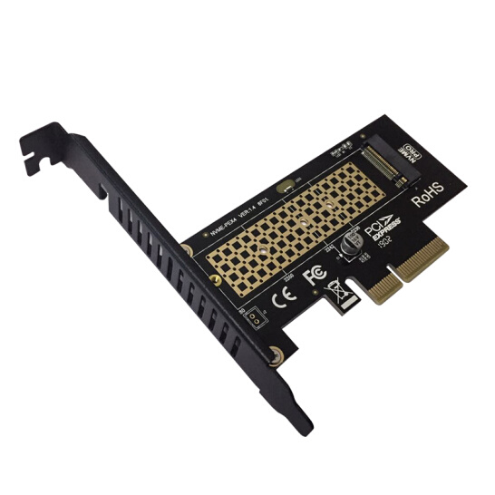
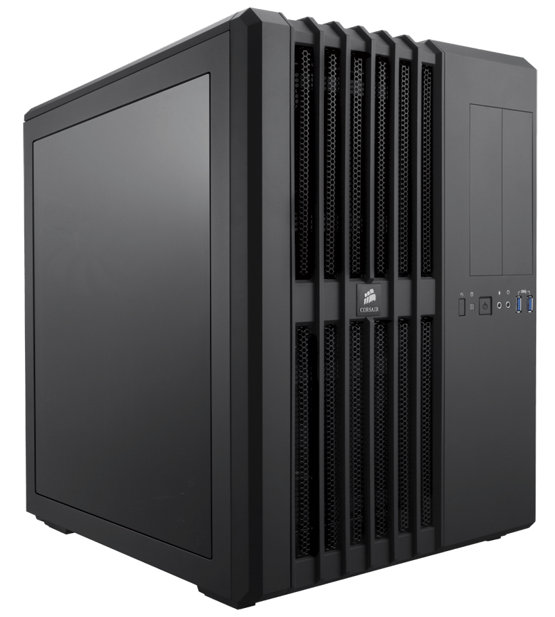

如何配置一台深度学习工作站?
这篇文章主要介绍的是家用的深度学习工作站，典型的配置有两种，分别是一个 GPU 的机器和 四个 GPU的机器。如果需要更多的 GPU 可以考虑配置两台四个 GPU 的机器。如果希望一台机器同时具备 6~8 个 GPU 需要联系专门的供应商进行配置，并且需要专业的机房存放这些服务器，放在家里噪声很大并且容易跳闸。
CPU
由于最近 AMD 和 Intel 频繁更新 CPU，因此大家选择新款的 CPU 比较好。
CPU 与 GPU 的关系
CPU 瓶颈没有那么大，一般以一个 GPU 对应 2~4 个 CPU 核比较好，比如单卡机器买四核 CPU，四卡机器买十核 CPU。
当你在训练的时候，只要数据生成器（DataLoader）的产出速度比 GPU 的消耗速度快，那么 CPU 就不会成为瓶颈，也就不会拖慢训练速度。
PCI-E 支持情况
除了核数，你还需要注意 PCI-E 支持情况，一般显卡是 PCI-E 3.0 x16，比如 i9-9820X 的 PCI-E 通道数是 44 ，配置四卡的话，只能支持 1x16+3x8+1x4，也就是单卡全速，三卡半速，一个 NVMe 固态硬盘。这种情况下可以考虑选择带有 PLX 桥接芯片的主板。
AMD 的 2990WX 有 64条 PCI-E，但是只支持 x16/x8/x16/x8 的四卡配置。
英特尔CPU

双卡机器选 i9-9900K，四卡机器按照预算选X系列的CPU。
主板
主板需要注意：
- CPU 接口是否能对上，如 LGA2066 和 SocketTR4
- PCI-E 插槽的高度是否够插显卡，比如 PCI-E 插口之间的距离至少要满足双槽宽显卡的高度
- PCI-E 同时可以支持几张卡以什么样的速度运行，如 1x16 + 3x8 是常见的配置
主板必看参数
GIGABYTE X299 AORUS MASTER (rev. 1.0) 使用了 4 组 2 槽间距显卡插槽设计，支持 1x16、2x16、2x16 + 1x8、1x16 + 3x8 四种配置（需要十核以上的 CPU），这里请参阅说明书安装显卡，安装在不同位置的速度是不一样的：


带有桥接芯片的主板
有的主板如 WS X299 SAGE 带有 PLX 桥接芯片，可以在 CPU 没有足够 PCI-E 的情况下达到四卡 x16 的速度：


在多卡并行训练的时候，PCI-E 的传输速度决定了梯度同步的速度，如果你训练的的模型比较大，希望搭建多卡机器，建议选择支持四路 PCI-E x16 的主板。
显卡
显卡性能表
| 型号 | 架构 | 价格(元) | 显存(GB) | CUDA核 | Tensor核 | FP32(TFLOPS) | FP16 | INT8 |
|---|---|---|---|---|---|---|---|---|
| GTX 1080Ti | Pascal | 5299 | 11 | 3584 | NA | 11.3 | NA | NA |
| RTX 2080 | Turing | 5499 | 8 | 2944 | 368 | 10 | 40.3 | 161.1 |
| RTX 2080Ti | Turing | 8599 | 11 | 4532 | 544 | 13.4 | 53.8 | 215.2 |
| TITAN RTX | Turing | 16499 | 24 | 4608 | 576 | 16.3 | 130 | 260 |
| Tesla V100 | Volta | 79600 | 32 | 5120 | 640 | 15.7 | 125 | NA |
训练需要 FP32 和 FP16 的性能，推断需要 INT8 的性能。训练大模型需要注意显存大小。
考虑成本可以买 RTX 2080Ti，想要高性能并且高性价比可以买 TITAN RTX，土豪可以选 Tesla V100。
RTX 2080 显存较小，不推荐。GTX 1080Ti 已经出了太久了，网上都是二手卡，不推荐。
参考链接：
涡轮与风扇
采购显卡的时候，一定要注意买涡轮版的，不要买两个或者三个风扇的版本，除非你只打算买一张卡。
因为涡轮风扇的热是往外机箱外部吹的，所以可以很好地带走热量，散热比较好。如果买三个风扇的版本，插多卡的时候，上面的卡会把热量吹向第二张卡，导致第二张卡温度过高，影响性能。
风扇显卡很有可能是超过双槽宽的，第二张卡可能插不上第二个 PCI-E 插槽，这个也需要注意。

涡轮：索泰 GeForce® RTX2080-8GD6 AI版 OC HA

风扇：华硕 ROG 猛禽系列 GeForce RTX™ 2080 Ti OC版
服务器推断卡
除了用于训练，还有一类卡是用于推断的（只预测，不训练），如：
| 型号 | 架构 | 价格(元) | 显存(GB) | CUDA核 | Tensor核 | FP32(TFLOPS) | FP16 | INT8 |
|---|---|---|---|---|---|---|---|---|
| Tesla P4 | Pascal | 14500 | 8 | 2560 | NA | 5.5 | NA | 22 |
| Tesla P40 | Pascal | 43999 | 24 | 3584 | NA | 12 | NA | 47 |
| Tesla P100 | Pascal | 48900 | 16 | 3584 | NA | 10.6 | 21.2 | NA |
| Tesla V100 | Volta | 79600 | 32 | 5120 | 640 | 15.7 | 125 | NA |
| Tesla T4 | Turing | 19500 | 16 | 2560 | 320 | 8.1 | 65 | 130 |
这些卡全部都是不带风扇的，但它们也需要散热，需要借助服务器强大的风扇被动散热，所以只能在专门设计的服务器上运行，具体请参考英伟达官网的说明。
性价比之选应该是 Tesla T4，但是发挥全部性能需要使用 TensorRT 深度优化，目前仍然存在许多坑，比如当你的网络使用了不支持的运算符时，需要自己实现。
英伟达只允许这类卡在服务器上运行，像 GTX 1080Ti、RTX 2080Ti 都是不能在数据中心使用的。
No Datacenter Deployment. The SOFTWARE is not licensed for datacenter deployment, except that blockchain processing in a datacenter is permitted.
参考链接：
- https://developer.nvidia.com/deep-learning-performance-training-inference
- https://www.nvidia.cn/object/where-to-buy-tesla-catalog-cn.html
- https://www.supermicro.org.cn/support/resources/gpu/
- https://www.geforce.com/drivers/license/geforce
硬盘
硬盘类型
常用硬盘接口有三种：
- SATA3.0，速度 600MB/s
- SAS，速度 1200MB/s
- PCIE 3.0 x4（NVMe)，速度 3.94GB/s
参数对比
下面是根据代表产品查询的参数：
| 类型 | 价格(元/TB) | 读取速度(MB/s) | 写入速度 | 4K随机读取(IOPS) | 4K随机写入(IOPS) |
|---|---|---|---|---|---|
| SATA3 机械硬盘 | 200 | 100 | 100 | 100 | 100 |
| SATA3 固态硬盘 | 800 | 550 | 520 | 98000 | 90000 |
| NVMe 固态硬盘 | 1000 | 3230 | 1625 | 340000 | 275000 |
注：
- 4K 随机读写的队列深度为 32
- SATA3 机械硬盘没有太好的数据来源，所以数据是经验值
- SATA3 固态硬盘数据来源：三星（SAMSUNG）1TB SSD固态硬盘 SATA3.0接口 860 EVO
- NVMe 固态硬盘数据来源：英特尔（Intel）1TB SSD固态硬盘 M.2接口(NVMe协议) 760P系
在面对大量小文件的时候，使用 NVMe 硬盘可以一分钟扫完 1000万文件，如果使用普通硬盘，那么就需要一天时间。为了节省生命，简化代码，硬盘建议选择 NVMe 协议的固态硬盘。
如果你的主板不够新，没有NVMe 插槽，你可以使用 M.2 转接卡将 M.2 接口转为 PCI-E 接口。

内存
内存容量的选择通常大于显存，比如单卡配 16GB 内存，四卡配 64GB 内存。由于有数据生成器（DataLoader），数据不必全部加载到内存里，通常不会成为瓶颈。
电源
先计算功率总和，如单卡 CPU 100W，显卡 250W，加上其他的大概 400W，那么就买 650W 的电源。
双卡最好买 1000W 以上的电源，四卡最好买 1600W 的电源，我这里实测过四卡机用 1500W 的电源来带，跑起来所有的卡以后会因为电源不足而自动关机。
一般墙上的插座只支持 220V 10A，也就是 2200W 的交流电，由于电源要把交流电转直流电，所以会有一些损耗，最高只有 1600W，因此如果想要支持八卡，最好不要在家尝试。八卡一般是双电源，并且需要使用专用的 PDU 插座，并且使用的是 16A 插口，如果在家使用，会插不上墙上的插座。
网卡
一般主板自带千兆网卡。如果需要组建多机多卡集群，请联系供应商咨询专业的解决方案。
机箱
如果配单卡，可以直接买个普通机箱，注意显卡长度能放下就行。
如果配四卡机器，建议买一个 Air 540 机箱，因为我正在用这一款。

显示器
深度学习工作站装好系统以后就不需要显示器了，装系统的时候使用手边的显示器就行。
键盘鼠标
深度学习工作站装好系统以后就不需要键盘鼠标了，装系统的时候使用手边的键盘鼠标就行。